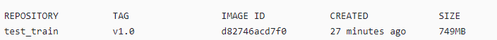

驱动和开发环境安装指南
前言
该文档为NNN向导性使用指导，主要介绍在板上运行NNN业务的主要步骤。
与本文档相对应的产品版本如下。
本文档主要适用于NNN开发人员。开发人员必须具备以下经验和技能：
- 了解图像分析工具的基本概念。
- 有一定的图像分析工具开发经验。
修订记录累积了每次文档更新的说明。最新版本的文档包含以前所有文档版本的更新内容。
概述
Ascend NNN简介
Ascend NNN为新一代图像分析工具加速器，前端支持开源AA框架（Caffe/ONNX），后端支持NNN/CPU的异构计算，提供完整的软硬件计算加速方案。
部署架构
部署架构如图1所示。NNN环境包含PC端工具侧开发环境和单板侧板端环境，当一个训练好的模型过来后，首先可以经过AMCT（Advanced Model Compression Toolkit）进行量化，将模型中部分层量化为8bit计算，提升计算效率；其次使用ATC（Advanced Tensor Compiler）工具将量化后的模型或非量化的模型转换为Ascend NNN认识的离线模型；最后，离线模型放置在板端环境，即可进行推理。

板端环境中包含板端执行推理时需要的头文件、动态库、驱动ko以及sample。
命令行方式开发环境：需要单独部署CANN软件包，采用命令行的方式进行安装和使用，具体方法请参见命令行方式开发环境安装。
该环境都可安装独立的AMCT工具，支持将原始的float32模型，量化为低bit，以提升推理性能。工具安装以及使用方法请参见《AMCT使用指南（Caffe）》、《AMCT使用指南（Pytorch）》等手册。
使用流程
本章节介绍原始训练好的模型如何在NNN上执行以及遇到问题的整体使用流程，运行流程如图1所示。

下面以Caffe原始网络模型为例，说明运行流程：
- 当训练好的Caffe模型准备好后，可以直接使用ATC工具进行模型转换，也可以使用AMCT先进行量化，然后将量化后的Caffe模型再传给ATC工具进行离线模型转换。
- ATC离线模型转换后生成的om模型，可以在板端环境上使用ACL（Advanced Computing Language）做推理。
- 推理后如果遇到精度问题，可以选择Dump网络的中间层数据，和Caffe的Dump结果做比较，来定位是哪一层的问题。为了缩小范围，可以使用MindCmd上的子模型导出功能（当前仅支持Caffe模型），将问题范围缩小，再使用导出的子模型复现问题。
- 当推理性能不满足要求时，可以通过Profiling工具查看网络中每个算子的耗时以及带宽数据，可能通过分析瓶颈点，修改网络来提升整网性能。
说明：
上述流程中涉及参考手册如下：
- AMCT：如果用户想使用量化特性提升推理性能，请参见《AMCT使用指南（Caffe）》、《AMCT使用指南（Pytorch）》，对训练好的模型进行量化，量化完成后再使用ATC工具进行模型转换。
- ATC工具模型转换：请参见《ATC工具使用指南》，将训练好的模型转换成平台识别的离线模型，应用程序指定模型资源后即可进行推理；具体支持的Caffe算子规格请参见《ATC工具使用指南》算子规格说明章节。
- 模型推理过程中精度或性能不达标：请参见《快速上手指南》“精度调优建议”和“性能问题分析及性能调优”章节。
NNN环境安装
板端环境安装
- 板端环境安装请参见《xxxx SDK 安装以及升级使用说明》。
- SVP ACL接口使用说明请参见《应用开发指南》>“SVP ACL API参考”章节。
- 需要将SVP_NNN相关库路径加入到系统环境变量LD_LIBRARY_PATH（如smp/a55_linux/mpp/out/lib/svp_nnn）。
-
板端开发所依赖的文件清单如表1所示。
表 1 板端开发依赖的文件
命令行方式开发环境安装
简介
CANN（Compute Architecture for Neural Networks）是针对AA场景推出的异构计算架构，通过提供多层次的编程接口，支持用户快速构建AA应用和业务。
本文档主要用于指导用户安装CANN开发环境，用于代码开发、编译等不依赖于设备的开发活动（例如ATC模型转换、算子和推理应用程序的纯代码开发）。开发环境搭建逻辑架构如图1所示。

安装流程如图2所示。

软件包获取
环境搭建前，请准备如表1所示CANN软件包，用户根据具体板端环境，选择其中一个软件包进行安装。
表 1 软件包说明
其中_<version>_表示软件版本号。
安装前准备
开发环境所要求的硬件及操作系统要满足以下条件。
表 1 Ubuntu系统所要求的环境信息
请从http://old-releases.ubuntu.com/releases/18.04.1/网站下载对应版本软件进行安装，可以下载桌面版：ubuntu-xxx-desktop-amd64.iso，或Server版：ubuntu-xxx-server-amd64.iso。 |
|||
请参见安装依赖。 |
|||
请参见安装依赖。 |
|||
请参见安装依赖。 |
|||
请参见安装依赖。 |
|||
请参见安装依赖。 |
运行用户为实际运行推理业务的用户；安装用户为实际安装软件包的用户，针对安装用户：
- 若使用root用户安装，支持所有用户运行相关业务。
- 若使用非root用户安装，该场景下安装及运行用户必须相同。
- 若已有非root用户，则无需再次创建。
- 若想使用新的非root用户，则需要先创建该用户，请参见如下方法创建。
创建非root用户操作方法如下，如下命令请以root用户执行。
-
创建非root用户。
-
设置非root用户密码。
密码有效期为90天，您可以在/etc/login.defs文件中修改有效期的天数，或者通过chage命令来设置用户的有效期，详情请参见设置用户有效期。
安装过程需要下载相关依赖，请确保开发环境能够连接网络。
请在root用户下执行如下命令检查源是否可用。
如果命令执行报错，请检查网络是否连接或者把“/etc/apt/sources.list”文件中的源更换为可用的源。
如果使用非root用户安装，apt-get需要用到提权命令，请用户自行获取所需的sudo权限。使用完成后请取消涉及高危命令的权限，否则有sudo提权风险。
如果安装用户为root，即CANN软件包的使用者为所有用户，请使用root用户安装依赖的gcc、python3.7.5等软件。如果安装用户为非root，即CANN软件包的使用者仅限于指定的非root用户，请使用su - username命令切换到非root用户安装依赖软件。
-
检查系统是否安装python依赖以及gcc等软件。
分别使用如下命令检查是否安装gcc，make以及python依赖软件等。
gcc --version g++ --version cmake --version make --version unzip --version dpkg -l build-essential | grep build-essential | grep ii dpkg -l zlib1g-dev| grep zlib1g-dev| grep ii dpkg -l libbz2-dev| grep libbz2-dev| grep ii dpkg -l libsqlite3-dev| grep libsqlite3-dev| grep ii dpkg -l libssl-dev| grep libssl-dev| grep ii dpkg -l libxslt1-dev| grep libxslt1-dev| grep ii dpkg -l libffi-dev| grep libffi-dev| grep ii若分别返回如下信息则说明已经安装。
gcc (Ubuntu 7.4.0-1ubuntu1~18.04.1) 7.4.0 g++ (Ubuntu 7.4.0-1ubuntu1~18.04.1) 7.4.0 cmake version 3.10.2 GNU Make 4.1 UnZip 6.00 of 20 April 2009, by Debian. Original by Info-ZIP. build-essential 12.4ubuntu1 amd64 Informational list of build-essential packages zlib1g-dev:amd64 1:1.2.11.dfsg-0ubuntu2 amd64 compression library - development libbz2-dev:amd64 1.0.6-8.1ubuntu0.2 amd64 high-quality block-sorting file compressor library - development libsqlite3-dev:amd64 3.22.0-1ubuntu0.2 amd64 SQLite 3 development files libssl-dev:amd64 1.1.1-1ubuntu2.1~18.04.5 amd64 Secure Sockets Layer toolkit - development files libxslt1-dev:amd64 1.1.29-5ubuntu0.2 amd64 XSLT 1.0 processing library - development kit libffi-dev:amd64 3.2.1-8 amd64 Foreign Function Interface library (development files)否则请执行如下安装命令（如果只有部分软件未安装，则如下命令修改为只安装还未安装的软件即可）：
sudo apt-get install -y gcc g++ cmake make unzip build-essential zlib1g-dev libbz2-dev libsqlite3-dev libssl-dev libxslt1-dev libffi-devlibsqlite3-dev需要在python安装之前安装，如果用户操作系统已经安装python3.7.5环境，在此之后再安装libsqlite3-dev，则需要重新编译python环境。
-
检查系统是否安装python开发环境。
CANN软件包依赖python环境，分别使用命令python3.7.5 --version、python3.7 --version、pip3.7.5 --version检查是否已经安装，如果返回如下信息则说明已经安装。
否则请根据如下方式安装python3.7.5。
-
使用wget下载python3.7.5源码包，可以下载到开发环境任意目录，命令为：
-
进入下载后的目录，解压源码包，命令为：
-
进入解压后的文件夹，执行配置、编译和安装命令：
cd Python-3.7.5 ./configure --prefix=/usr/local/python3.7.5 --enable-loadable-sqlite-extensions --enable-shared make sudo make install其中“--prefix”参数用于指定python安装路径，用户根据实际情况进行修改。“--enable-shared”参数用于编译出libpython3.7m.so.1.0动态库，“--enable-loadable-sqlite-extensions”参数用于加载sqlite-devel依赖。
本手册以--prefix=/usr/local/python3.7.5路径为例进行说明。执行配置、编译和安装命令后，安装包在/usr/local/python3.7.5路径，libpython3.7m.so.1.0动态库在/usr/local/python3.7.5/lib/libpython3.7m.so.1.0路径。
-
执行如下命令设置软链接：
-
设置python3.7.5环境变量。
-
如果python安装用户为root：
该场景下CANN软件包使用root用户进行安装，请在当前终端窗口直接执行如下命令设置环境变量。
#用于设置python3.7.5库文件路径 export LD_LIBRARY_PATH=/usr/local/python3.7.5/lib:$LD_LIBRARY_PATH #如果用户环境存在多个python3版本，则指定使用python3.7.5版本 export PATH=/usr/local/python3.7.5/bin:$PATH 须知：
须知： 运行用户是root，不建议修改.bashrc，否则可能会影响其它系统提供的python工具的使用，如果仍想使用系统默认工具，请重新开启终端窗口。
-
如果python安装用户为非root：
该场景下CANN软件包使用非root用户进行安装，请以非root用户在任意目录下执行vi ~/.bashrc命令，打开.bashrc文件，在文件最后一行后面添加如下内容。
#用于设置python3.7.5库文件路径 export LD_LIBRARY_PATH=/usr/local/python3.7.5/lib:$LD_LIBRARY_PATH #如果用户环境存在多个python3版本，则指定使用python3.7.5版本 export PATH=/usr/local/python3.7.5/bin:$PATH执行:wq!命令保存文件并退出，执行source ~/.bashrc命令使其立即生效。
-
-
安装完成之后，执行如下命令查看安装版本，如果返回相关版本信息，则说明安装成功。
-
-
安装CANN软件包的相关依赖。
安装前请先使用pip3.7.5 list命令检查是否安装相关依赖，若未安装，则安装命令如下（如果只有部分软件未安装，则如下命令修改为只安装还未安装的软件即可）。
- 请在安装前配置好pip源，具体可参考配置pip源。
- 安装前，建议执行命令pip3 install --upgrade pip进行升级，避免因pip版本过低导致安装失败。
- 如下命令如果使用非root用户安装，需要在安装命令后加上--user，例如：pip3 install pathlib2 --user，安装命令可在任意路径下执行。
表 2 依赖列表
上述安装成功后返回信息中的版本号只是样例，请以实际环境中的返回信息为准。
使用CANN软件包的安装用户将获取的软件包上传到开发环境任意路径下。软件包存放路径支持大小写字母（a-z，A-Z）、数字（0-9）、下划线（_）、中划线（-）、句点（.（非相对路径））、单个/（文件名或目录不支持/）。
软件包安装
请参见安装前准备完成安装前准备。
如下命令中的*请替换为具体CANN软件包，命令中所涉及的${INSTALL_DIR}请替换为CANN软件包安装后文件存储路径。例如，$HOME/Ascend/ascend-toolkit/<version>/x86_64-linux。
- 以CANN软件包的安装用户登录开发环境，切换到软件包所在路径。
-
增加安装用户对软件包的可执行权限。
在软件包所在路径执行ls -l命令检查安装用户是否有该文件的执行权限，若没有，请执行如下命令。
-
校验软件包。
执行如下命令，校验软件包安装文件的一致性和完整性。
-
执行如下命令进行安装（以下命令支持--install-path=_<path>_等参数，具体参数说明请参见参数说明/常用命令）。
说明： - 如果以root用户安装，建议不要安装在非root用户目录下，否则存在被非root用户替换root用户文件以达到提权目的的安全风险。
- 如果要多个版本并存，请使用--install-path=<path>指定新版本的安装路径。
- 如果默认安装路径下已经安装了其他架构NNN的版本，请使用--install-path=<path>指定新的安装路径。否则安装和更新将覆盖原有版本。
若出现如下关键信息，则说明安装成功：
- 软件包默认安装路径：root用户/usr/local/Ascend；非root用户$HOME/Ascend。
- 安装详细日志路径：${INSTALL_DIR}/ascend_install.log。
- 安装后软件包的安装路径、安装命令以及运行用户信息记录路径：${INSTALL_DIR}/<package_name>/ascend_install.info
${INSTALL_DIR}请替换为CANN软件包安装后文件存储路径。例如，$HOME/Ascend/ascend-toolkit/<version>/x86_64-linux。
-
配置环境变量。
执行如下命令配置环境变量。
${INSTALL_DIR}请替换为CANN软件包安装后文件存储路径。例如，$HOME/Ascend/ascend-toolkit/<version>/x86_64-linux。
安装后处理
开发环境安装完毕，如果用户使用应用工程开发了相关程序，需要进行工程的编译和运行，用于生成相关二进制文件，进行工程编译之前，请先配置交叉编译环境。
根据开发环境安装时选择的CANN软件包的形态不同，交叉编译环境配置方法不同，当前版本仅支持Linux操作系统SoC形态的CANN软件包。
若安装的CANN软件包为Linux操作系统SoC形态，需要搭建交叉编译环境，具体方法请参考交叉编译环境准备。
常用操作
查询软件包版本号
- 以CANN软件包的安装用户登录软件包的安装环境。
-
进入CANN软件包安装后文件存储路径。 （如下以进入非root用户默认安装路径为例进行说明）
-
执行以下命令获取版本信息。
升级软件包
- 升级过程禁止进行其他维护操作动作，软件版本升级过程中会导致业务中断，升级软件包后，不会影响正常业务。
- 为了减少对业务的影响，请提前切走业务或在业务量低时进行升级操作。
- 升级后，请确保所有组件的版本保持一致。
- 升级过程中的日志信息输出在：${INSTALL_DIR}/ascend_install.log文件中，${INSTALL_DIR}请替换为CANN软件包安装后文件存储路径。例如，$HOME/Ascend/ascend-toolkit/<version>/x86_64-linux。
- 以CANN软件包的安装用户将新的软件包上传到开发环境任意目录。
-
增加安装用户对软件包的可执行权限。
在软件包所在路径执行ls -l命令检查安装用户是否有该文件的执行权限，若没有，请执行如下命令。
-
校验软件包。
下载软件包后，执行如下命令校验软件包安装文件的一致性和完整性。
-
执行如下命令进行升级。
*请替换为具体软件包名，如果升级过程中无错误信息提示，则表示升级成功。
-
检查升级后的版本号。
升级后需要确保各组件的版本号一致。在软件包的安装路径下（例如，非root用户默认路径$HOME/Ascend/ascend-toolkit/<version>/x86_64-linux），执行如下命令查看所升级软件包版本是否正确。
关于升级保留文件的说明：
- 如果用户在CANN软件包安装后文件存储路径有写权限的目录，自定义了文件，则升级时不会删除此类文件，保留的文件数据会继承到升级的版本中。
- 如果用户修改了安装路径下的有写权限的已有文件（非用户自定义的），则升级时会删除此类文件。
解压软件包
如果用户想要解压CANN软件包，查看软件包中文件详细内容，则可以执行如下命令：
*请替换为具体软件包名，<path>表示解压后文件所在目录，该目录无需用户手动建立，解压过程中会自动创建，例如：
./*.run --noexec --extract=./package，则命令执行后会自动将解压后的内容放在package目录。
卸载软件包
支持两种方式卸载，请使用软件包的安装用户根据实际情况选择其中一个方式卸载即可。
如下命令中的*请替换为具体CANN软件包，命令中所涉及的${INSTALL_DIR}请替换为CANN软件包安装后文件存储路径。例如，$HOME/Ascend/ascend-toolkit/<version>/x86_64-linux。
- 以软件包的安装用户登录软件包所在安装环境。
-
进入软件包所在路径，执行以下命令进行卸载。
卸载完成后，若显示如下信息，则说明软件卸载成功：
xxx表示卸载的实际软件包名。
- 如果安装时使用了--install-path指定了安装路径，卸载时需要使用--install-path指定卸载路径。
- 如果安装路径包含多个版本，卸载时需要使用--install-path指定卸载版本的路径。
- 以CANN软件包的安装用户登录软件包所在安装环境。
-
在任意路径分别执行如下命令卸载软件包：
其中，
- ${INSTALL_PATH}为软件包基础安装路径，例如root用户默认安装路径/usr/local/Ascend；非root用户默认安装路径$HOME/Ascend，请根据实际情况进行替换。
- <version>表示软件版本号。
卸载完成后，若显示如下信息，则说明软件卸载成功：
xxx表示卸载的实际软件包名。卸载完成后，如果在原安装路径下存在未删除的软链接，则需要用户手动删除。
关于卸载保留文件的说明：
- 如果用户在CANN软件包安装后文件存储路径有写权限的目录，自定义了文件，则卸载时不会删除此类文件，保留的文件数据会继承到新安装的版本中。
- 如果用户修改了安装路径下的有写权限的已有文件（非用户自定义的），则卸载时会删除此类文件。
设置用户有效期
为保证用户的安全性，应设置用户的有效期，使用系统命令chage来设置用户的有效期。
命令为：
相关参数请参见表1。
表 1 设置用户有效期
- 表1只列举出常用的参数，用户可通过chage --help命令查询详细的参数说明。
- 日期格式为YYYY-MM-DD，如chage -E 2020-12-01 username表示用户username的口令在2020年12月1日过期。
- username必须填写，填写时请替换为具体用户，默认为root用户。
举例说明：修改用户username的有效期为2020年12月01日。
配置pip源
配置pip源，配置方法如下：
-
使用软件包安装用户，执行如下命令：
如果提示目录不存在，则执行如下命令创建：
在.pip目录下创建pip.conf 文件，命令为：
-
编辑pip.conf文件。
使用vi pip.conf命令打开pip.conf文件，写入如下内容：
-
执行:wq!命令保存文件。
-
（可选）如果更换pip源之后，仍旧无法连接网络，则可能是域名服务器改变导致，需要更换域名服务器IP地址，方法如下：
-
在linux服务器执行如下命令获取新的域名服务器IP地址：
域名地址可以从更新后的pip源中获取，例如上述的trusted-host取值：
-
将4.a中获取到的新的域名服务器IP地址写入/etc/resolv.conf文件。
切换到root用户，执行vi /etc/resolv.conf命令打开/etc/resolv.conf，在该文件最后增加如下内容：
-
增加完成后，执行:wq!命令保存文件并退出。
-
附录
参数说明/常用命令
软件包支持根据命令行完成一键式安装，各个命令之间可以配合使用，用户根据安装需要选择对应参数完成安装，所有参数都是可选参数。
安装命令格式： ./*.run [options]
详细参数请参见表1。
如果通过./*.run --help命令查询出的参数未解释在如下表格，则说明该参数预留或适用于其他芯片版本，用户无需关注。
表 1 安装包支持的参数说明
调试工具使用
板端环境部署好后，MindCmd通过ssh登录对应的板端环境，需要在板端环境搭建OpenSSH服务。
板端Linux环境OpenSSH服务搭建
交叉编译
依赖软件包准备
OpenSSH下载地址：https://cdn.openbsd.org/pub/OpenBSD/OpenSSH/portable/openssh-8.0p1.tar.gz
zlib 1.2.11: https://zlib.net/fossils/zlib-1.2.11.tar.gz
OpenSSL 1.1.1g: https://www.openssl.org/source/openssl-1.1.1g.tar.gz
交叉编译环境准备
获取发布包中的对应交叉编译器，aarch64-v01c01-linux-musl-clang或aarch64-v01c01-linux-gnu。交叉编译环境这里以x86_64的Ubuntu 18.04，交叉工具链aarch64-v01c01-linux-gnu为例。
前提条件
请使用软件包的安装用户切换到/opt/linux/x86-arm/aarch64-v01c01-linux-gnu-gcc/bin路径查看是否存在aarch64-v01c01-linux-gnu-g++交叉编译器：
-
如果存在：
在当前目录执行./aarch64-v01c01-linux-gnu-g++ --help命令检查交叉编译工具是否可用，若返回参数信息则说明可用。
-
如果不存在，则说明aarch64-v01c01-linux-gnu-g++交叉编译器未安装，请参见如下步骤进行配置。
配置步骤
-
解压工具链aarch64-v01c01-linux-gnu，工具链包名以发布包中版本为准。
-
执行安装脚本(可以参考readme指定其他安装路径)：
aarch64-v01c01-linux-musl安装方式为：
-
查看安装情况：
此时交叉编译器已被安装至/opt/linux/x86-arm路径下，所需的环境变量也已自动更新到/etc/profile中。执行以下命令应该能正常显示gcc版本。
交叉编译
zlib
解压zlib的源码压缩包，并进入解压后的目录
配置交叉编译器及安装路径：
编译及安装：
OpenSSL
解压OpenSSL的源码压缩包，并进入解压后的目录。
配置编译选项、交叉编译器及安装路径：
./config no-asm shared --cross-compile-prefix=aarch64-v01c01-linux-gnu- --prefix=$HOME/install/openssl
将生成的Makefile中的所有"-m64"修改为"-mabi=lp64"：


注意：
如果是aarch64-v01c01-linux-musl-clang编译器，上述配置编译选项需改为：CC=aarch64-v01c01-linux-musl-clang ./config no-asm shared --prefix=$HOME/openssl，同时不需要做替换Makefile中的所有"-m64"的操作。
编译及安装：
注：make -j并行编译可能会失败，若失败可直接make
OpenSSH
解压OpenSSH的源码压缩包，并进入：
配置：
./configure --host=aarch64-linux --with-libs --with-zlib=$HOME/install/zlib --with-ssl-dir=$HOME/install/openssl CC=aarch64-v01c01-linux-gnu-gcc AR=aarch64-v01c01-linux-gnu-ar --prefix=$HOME/install/openssh --exec-prefix=$HOME/install/openssh --disable-etc-default-login --disable-strip
编译及安装：
注：install时若提示无权限创建/var/empty（privilege separation directory），则可以使用sudo创建后再使用chown改变owner，如果没有sudo权限，则修改Makefile文件中/var/empty路径为个人用户下路径：如：/tmp/install/var/empty，只要在板端也有相同路径即可，如图1所示。

再次执行make install，此时若提示ssh-keygen执行失败，如下代码所示，这是由于arm架构的可执行文件不识别，可暂时忽略，因为所需的文件（sshd, scp, ssh-keygen等）都已安装至目标路径。
/bin/mkdir -p /home/xxx/install/openssh/etc
/home/xxx/install/openssh/etc/ssh_config already exists, install will not overwrite
/home/xxx/install/openssh/etc/sshd_config already exists, install will not overwrite
/home/xxx/install/openssh/etc/moduli already exists, install will not overwrite
/bin/sh: line 1: ./ssh-keygen: cannot execute binary file: Exec format error
Makefile:388: recipe for target 'host-key' failed
make: *** [host-key] Error 126

部署
挂载命令
-
板端环境的操作系统为Linux时，在部署与调试后，使用过程中，若板端环境上的空间不足时，您可以使用mount命令将NFS服务器上的目录挂载到板端环境的指定目录。
-
以root用户登录Linux服务器（Ubuntu操作系统），安装NFS服务并配置共享目录。
在确保环境连网且源可用的前提下，安装NFS服务，可参考如下命令安装，如果安装过程中提示已安装NFS服务，则无需重复安装：
在“/etc/exports”文件中配置共享目录，配置完成后，执行/etc/init.d/nfs-kernel-server restart命令重启NFS服务使配置生效。可参考如下配置段（添加在文件的末尾），斜体部分请根据实际情况替换，_服务器绝对路径_表示Linux服务器的共享目录，如不存在，请提前创建。
-
命令示例如下，其中，_path_表示板端环境上的目录，需根据实际情况修改。
-
首次部署操作
-
挂载
-
切换至挂载目录，部署zlib和OpenSSL相关产物
-
切换至挂载目录，部署OpenSSH所需的可执行文件
-
使用ssh-keygen生成秘钥对
mkdir /etc/ssh ssh-keygen -t rsa -f /etc/ssh/ssh_host_rsa_key # 回车两次打印如下： Generating public/private rsa key pair. Enter passphrase (empty for no passphrase): Enter same passphrase again: Your identification has been saved in /etc/ssh/ssh_host_rsa_key. Your public key has been saved in /etc/ssh/ssh_host_rsa_key.pub. The key fingerprint is: SHA256:sirIxKjt/OtcVQh1bNSaHU6CQp7L6rI5tm8CtKznEF8 root@(none) The key's randomart image is: +---[RSA 3072]----+ | .o..+o. | | ..o.o+ + | | o....B . | | . . . .o o | |* . E + S | |oB . . + | |*+. . o | |++O+.o | | =B%O. | +----[SHA256]-----+ -
配置/etc/passwd
-
配置/etc/group
-
创建privilege separation directory
-
拷贝config至/etc并修改
-
修改ssh密码不为空
-
启动sshd，需指定config和key的路径
若发生如下报错：
-
错误1：报错权限问题
-
错误2：修改ssh登陆密码，输入密码，如root，提示错误，忽略继续输入，则账号密码是root root
快速部署操作
完成交叉编译和首次部署操作操作后，下次启动sshd，可参考如下快速启动。
-
挂载
-
启动sshd，需指定config和key的路径
容器镜像构建
宿主机与容器操作系统兼容性关系
当前采用Ubuntu 18.04 x84_64 作为宿主机操作系统和容器的操作系统构建容器镜像，兼容性关系如表1所示。
表 1 宿主机与容器操作系统
容器镜像OS场景只支持客户运行态业务，不支持开发态。
前提条件
- 请按照表1所示，获取对应软件包与打包镜像所需的Dockerfile文件及其他相关文件。部分需要用户自行下载的软件包，请参考提供的链接进行下载，确保下载的软件版本及文件名与镜像打包所需软件一致。
-
软件包名称中{version}表示版本号，{PFM_type}表示指定编译的平台，可选CPU或GPU。
表 1 所需软件包及文件说明
说明： - 请参考表1中提供的链接下载对应版本的软件包，确保镜像打包过程不失败，也可通过执行 prebuild.sh 脚本下载镜像构建所需的第三方软件包。
- 用户构建镜像前需核对软件包下载是否正常，如出现网络问题导致下载包为空的情况，用户需重新下载对应的软件包。用户手动中断prebuild.sh脚本执行可能会导致部分软件包下载不全。
- 以上下载链接仅供参考，对上述参考下载链接的安全性不负责任。
- 由于镜像构建过程中使用的镜像源由基础镜像 Ubuntu 18.04 决定，请用户根据基础镜像决定是否更换镜像源。更换镜像源可参考 Mirror_conf.sh 中提供的示例进行修改，示例仅供参考，并不适用所有环境，请用户根据环境需要自行设置合适的镜像源。
- 如果用户服务器和外部网络不直接连通，请自行配置Docker网络代理。
操作步骤
- 登录服务器。
-
创建软件包上传路径，在Dockerfile文件同级目录下新建Resources目录。
以“/home/$USER”为例，若/home/$USER下存放构建镜像所需的Dockerfile，则需在该路径下新建一个Resources文件夹存放项目所需软件包及相关文件（如 表1所示）。
-
将表1所示软件包及相关文件上传至服务器“/home/$USER/Resources”目录下。
用户也可将prebuild.sh上传至Resources目录下，通过执行prebuild.sh脚本，通过执行脚本下载镜像构建所需的第三方软件包。
说明： 用户可根据指定编译的平台，如GPU或CPU，更改prebuild.sh中软件包的下载版本（默认下载GPU版本的软件包）。
-
准备Dockerfile上传至服务器“/home/$USER”(即软件包文件夹Resources的同级目录下)。
已为用户提供了多种场景下的基础镜像Dockerfile文件，请用户根据实际情况结合自身理解进行二次开发。
如若用户不需进行修改，可将提供的基础镜像Dockerfile直接拷贝到“/home/$USER”目录下。
镜像构建文件夹层级目录如下。
├── /home/$USER ├──Resources ├── aarch64-{version}-linux.tgz ├── SVP_NNN_PC_{version}.tgz ├── Makefile.config ├── Mirror_conf.sh ├── ...... ├──Dockerfile 说明： - $USER表示用户自定义文件夹，该目录为Docker镜像构建目录，用户在该目录下新建Resources文件夹。
- 由于Dockerfile文件里有安装第三方软件包，如第三方软件出现漏洞，请用户自行修复。
- 对于 gcc-{version}-aarch64-v01c01-linux-gnu.tgz和 SVP_NNN_PC_{version}.tgz ，仅允许放置一个版本的软件包在 /home/$USER/Resources 进行Docker镜像构建。
- 请检查Resources目录下是否仅存放表1中所提及的文件及软件包，引入其他文件或软件包可能导致镜像构建失败。
-
进入软件包所在目录，执行以下命令，构建容器镜像。
其中 image 表示镜像名称，tag 表示标签，用户根据实际情况进行修改。
当出现“Successfully built xxx”表示镜像构建成功，注意不要遗漏命令结尾的“.”。
说明： - 如使用docker build 命令进行镜像构建时，出现下载超时问题或无法下载的问题，请用户核对 Mirror_conf.sh 中的镜像源是否配置正确，考虑是否更换更为合适的镜像源。
- 生态开源构建版本使用dockerfile进行构建时，如果使用的是欧拉工具链，欧拉工具链需要在构建后的docker容器中单独安装，请先按以下命令修改原有Dockerfile校验：
-
构建完成后，执行以下命令查看镜像信息。
显示示例：

编写示例
-
Dockerfile 编写示例
用户可根据需要自行修改Dockerfile中的内容。
-
Mirror_conf.sh 编写示例
如用户Ubuntu 18.04 中配置的镜像源在Docker镜像构建中无法正常下载所需软件包，则用户需参考Mirror_conf.sh修改合适的镜像源。
下述示例中，设置了http://mirrors.aliyun.com为镜像源，该镜像源并不一定适用所有的环境，请用户选择适合的镜像源进行替换。
#!/bin/bash # Mirror source configuration # The following configuration of mirror sources is for reference only. # You need to configure proper mirror sources based on your environment requirements. # Configure the image source according to the following example to ensure that the software package can be downloaded during image construction. ############## Modify the following information as required .################## # cp -a /etc/apt/sources.list /etc/apt/sources.list.bak # sed -i "s@http://.*archive.ubuntu.com@http://mirrors.aliyun.com@g" /etc/apt/sources.list # sed -i "s@http://.*security.ubuntu.com@http://mirrors.aliyun.com@g" /etc/apt/sources.list # mkdir -p /root/.pip/ # echo '[global]' >> /root/.pip/pip.conf # echo 'trusted-host=mirrors.aliyun.com' >> /root/.pip/pip.conf # echo 'index-url=http://mirrors.aliyun.com/pypi/simple' >> /root/.pip/pip.conf
部署容器
在docker容器中使用MindCmd时，启动容器指令有差异，如需在容器中使用MindCmd，请参考《MindCmd使用指南》“13.3 Docker容器中使用MindCmd”章节。
-
在运行环境中执行如下命令基于新的镜像运行一个容器，相关参数说明如表1所示。
CPU启动容器示例：
docker run -itd --shm-size=1g -v /tmp/.X11-unix:/tmp/.X11-unix -v ${host_mount_dir}:${host_mount_dir} -p ${port}:22 --name ${container_name} ${image_name}GPU启动容器示例：
docker run -itd --gpus all --shm-size=1g -v /tmp/.X11-unix:/tmp/.X11-unix -v ${host_mount_dir}:${host_mount_dir} -p ${port}:22 --name ${container_name} ${image_name} 说明： - 上下文参数中以变量符"${ }"形式描述的参数需要用户根据自己的环境进行填写，其他参数直接添加到执行命令中即可。 示例：如果用户挂载的数据卷为“/home/xxx”，那么对应填写的参数 -v ${host_mount_dir}:${host_mount_dir}为“-v /home/xxx:/home/xxx”。 示例：如果用户分配的端口为“40001”，那么对应填写的参数 :“-p ${port}:22”为“-p 40001:22”。 类似-itd、--gpus all等参数则直接拼接到命令当中，无需进行修改。
- 当容器中没有配置与宿主机同uid、gid的用户时，挂载目录会被修改权限，可通过“sudo chown -R ${user}:${group} ${mount_path}”的方式修改挂载目录权限。
- 上下文参数中以变量符"${ }"形式描述的参数需要用户根据自己的环境进行填写，其他参数直接添加到执行命令中即可。
- Docker启动命令参数有顺序限制，请勿自行调整参数顺序，否则在使用上可能受到影响。
表 1 运行容器命令参数说明
挂载文件夹，用于宿主机与容器文件资源共享。${host_mount_dir}路径要求为服务器侧已存在路径，且前后${host_mount_dir}填写的路径应该保持一致。如需在容器中使用MindCmd上板功能，该参数不可省略。
将容器ssh端口22映射到宿主机的某个端口，宿主机上的端口不能被占用，可执行“netstat -anp |grep 端口号 ”，如果没有回显，表示端口未被占用。
-
容器使用示例。
-
启动容器并进入容器(如容器关闭)，其中${container_name}为启动容器时配置的容器名称。
执行该命令后，如果命令行显示带有“<SVP_Docker>”标识，则表示已经运行并进入该容器。
-
新建终端，登录宿主机服务器，以ssh方式连接容器，并输入步骤2设置的密码，其中${port}为启动时容器时分配的映射端口。